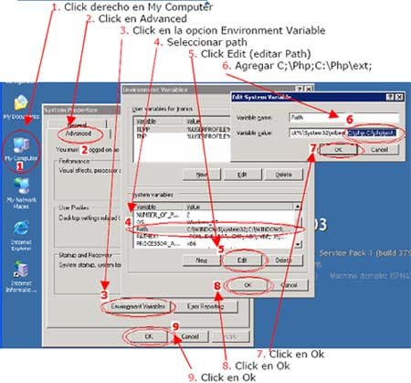
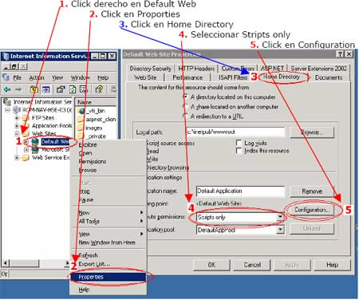
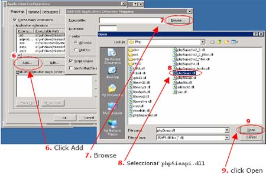
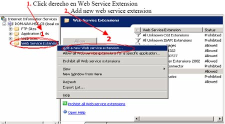
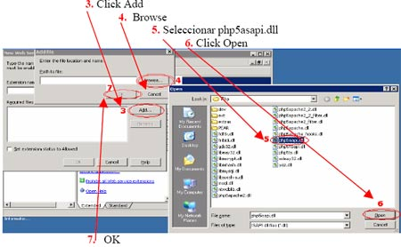
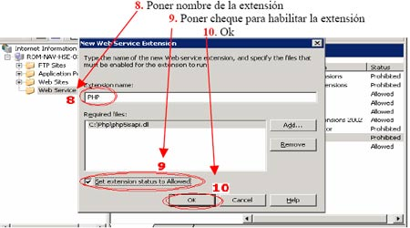
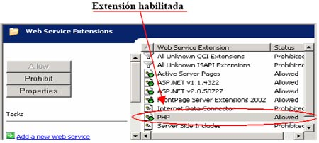

Instalar PHP usando IIS
Descargar archivos de http://www.php.net/downloads.php#v5
Se recomienda bajar los archivos PHP 5.2.1 zip package y las extensiones adicionales PECL PECL 5.2.1 Win32 binaries
- Crear directorio en C:PHP y extraer los archivos de ph 5.21zip package y extraer los archivos de PECL 5.2.1 WIN32 binaries en el directorio C:PHPEXT.
- Renombrar el archivio php.ini-recommended como php.ini
- Modificar archivo php.ini en las siguientes variables
short_open_tag = On /extension_dir = "c:phpext" / cgi.force_redirect = 0
- Copiar php.ini a c:windows o c:winnt
- Registrar la DLL regsvr32 php5activescript.dll
- Agregar ruta de del directorio php y las extenciones en la opcion de Environment Variable de windows2003

- Configurando extensiones en IIS






- Probando PHP:Crear archivo index.php en C:Inetpubwwwroot con
- Abrir IE6 y poner la dirección http://localhost/index.php, si le da error verificar los pasos de la instalación.